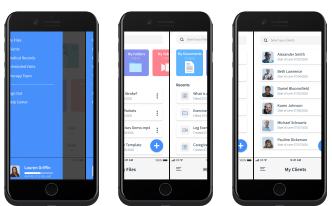
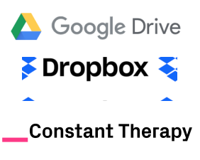
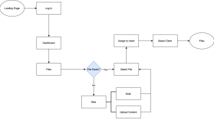
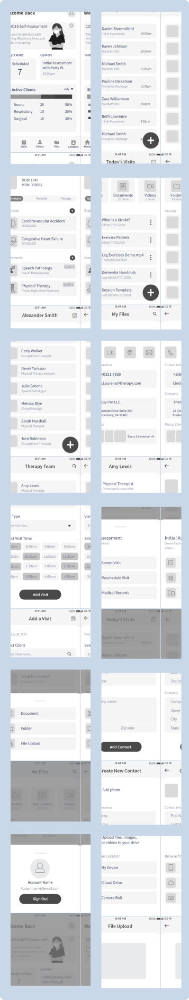
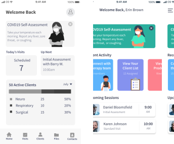
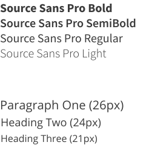
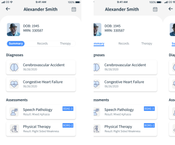
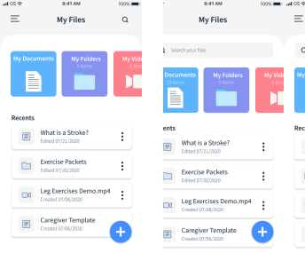

TheraShelf
Do therapy differently.
A workspace solution for home health therapists delivering remote services to their clients.

A workspace solution for home health therapists delivering remote services to their clients.
There has been an abrupt shift to a remote service model for rehabilitation therapies since the COVID19 outbreak. It is difficult to track clients, manage caseload, and organize therapy materials without the physical office space.
TheraShelf includes features that allow therapists to manage caseloads, track client progress, organize treatment materials, and collaborate with other therapy professionals. It creates a streamlined, transparent experience from start to finish.
I conducted a survey with 20 respondants to gain a better understanding of user’s experiences with cloud storage products. I included questions that explored specific motivations, feature rankings, and pain points. The key takeaways include:
Currently use a cloud storage product for therapy related tasks
Would use a cloud storage product designed for remote therapy
The top ranked features were considered carefully down the road when prioritzing user stories. They are logical choices to include in the MVP.
An analysis was completed with some popular cloud storage products that are already on the market. Common strengths included simple, clean designs with strong visuals to communicate hierarchy of information. None of these products had specialized features that met the specific needs of healthcare workers.
After completing my initial survey analysis, I had follow up conversations with two of the respondants. I gained a more thorough understanding of their frustations, goals, and attitudes towards cloud storage products. I developed personas to represent an inclusive and full spectrum representation of TheraShelf users. I would go on to reference these personas frequently when making design decisions for the product.
Charlie lives in a suburb outside of Boston where he works for a home health. He was recently promoted to Clinical Manager. He is excited to run the weekly care conference meetings with other therapists and take on a more administrative type of role.
Charlie lives in a suburb outside of Boston where he works for a home health. He was recently promoted to Clinical Manager. He is excited to run the weekly care conference meetings with other therapists and take on a more administrative type of role.
-Weekly care conference meetings are temporarily suspended due COVID19 -Therapist contact information is posted in the office, which is closed temporarily -He has to transport his materials and files from the office to his home
-Collaborate with the therapy team remotely -Create and upload materials remotely -Consolodate therapist and client information into one platform
Nadia recently completed school and relocated to FL to start her job as a physical therapist. She loves what she does but wants ot keep a good work-life balance. She joined several rec league sports teams to make new friends. She likes drawing and crafts to unwind.
Nadia wants to learn as much as possible in her new job. However, she also wants to have free time to do the things she loves. Time management skills and efficiency are very important. to Nadia.
-Material prep for sessions is time cosuming -Difficult to manage her clients, visit schedule, and therapy plans -She has to lug around huge binders of therapy materials and handouts
-Streamline session planning and scheduling -Create and access materials remotely -Manage client plans of care remotely
I created user flows to represent how a user would interact with TheraSelf to accomplish the high priority user stories. From there, a site map was created to help organize the destinations for each of the user flows.
It was finally time to put pen to paper. I started by sketching out possible layouts for the product pages based on the main user flows. Rapid iterations allowed me to make some initial design decisions quickly and efficiently. I then created digital wireframes for my first round of usability testing.
Using my low fidelity wire frames for reference, I created a clickable prototype in Figma. I completed remote usability testing with three participants to assess the effectiveness of the product design. They were presented with the following tasks:
The usability testing exposed several features that were problematic to the overall function of the product. These areas were revisited, tweaked, and/or replaced with more effective solutions.
“The first page feels a little cluttered. I get the toolbar but I think there should be some easier ways to get to the most important things.”
There was a bit of an overhaul to the dashboard page. The bottom toolbar was removed completely and a hamburger menu was added instead. This design uses space more effectively on the mobile screen while eliminating the need for ambiguous icons. The metrics were replaced with buttons to allow direct access to recent and/or most used features. Visuals were added to supplement the text information.
It’s time to define the TheraShelf brand. When making branding decisions, I carefully considered the target audience, user personas, and overarching goals of the product. The overall feel of the brand is intended to promote healing, growth, and simplicity. These traits are ideal for a health care product that centers around the rehabilitation process.
The primary color for TheraShelf is a bright blue, which represents trust, tranqulity, and knowledge. Several of the secondary colors also fall in the blue and green families to communicate growth and healing. Strategic pops of color are used sparingly to highlight information in the product.
Both the primary brand typeface and complementary typeface are geometric sans-serif fonts. The typefaces are clean and easy to read at all sizes. It translates well from desktop to a mobile platform.
I considered different configurations for the tab bar on the client overview page. Users were able to choose between the bubble feature or underline feature to highlight the specific tab during page navigation. The majority of users preferred the bubble feature since it was clearer and more eye catching compared to the underline option.
A high fidelity prototype was created in Figma. I was careful to include the visual elements defined by the branding guidlines and preference testing. The visual elements were combined with the strategic layout of the product page to create an intuitive user experience.
I completed another round of remote usability testing with the high fidelity prototype. This time the tasks included:
Again, I received constructive feed back for additional changes that needed to be made to improve TheraShelf.
“It’s strange that there are just search icons on some pages but search bars on others.”
This was an easy fix. The search icon was eliminated and replaced with a full search bar on the file page. This change improves element consistency from page to page. It also ensures that the user expectations are met throughout the product.
Next steps would be to implement more of the low priority user stories to make a complete product with specialized features for health care professions. For example, adding templated notes will allow the users to be more efficient and organized when creating content. I would follow that up with another round of usability testing and revisions as needed.
This project alowed me to mature and gain strong footing as a UX designer. I learned to check my personal expectations throughout the different phases of the design process. My ideations did not necessarily translate as clearly and effectively as I intended during user testing. However, I was able to embrace the design process and rely on user feedback to work through several iterations of the product. Designs that fall back on data and tangible research create the best user experience.
TheraShelf underwent some major and minor changes to the design elements and layout. At the end of the day, TheraShelf finds its place amoungst other cloud storage products by targeting a niche health care audience. It provides creative solutions to our new remote world.